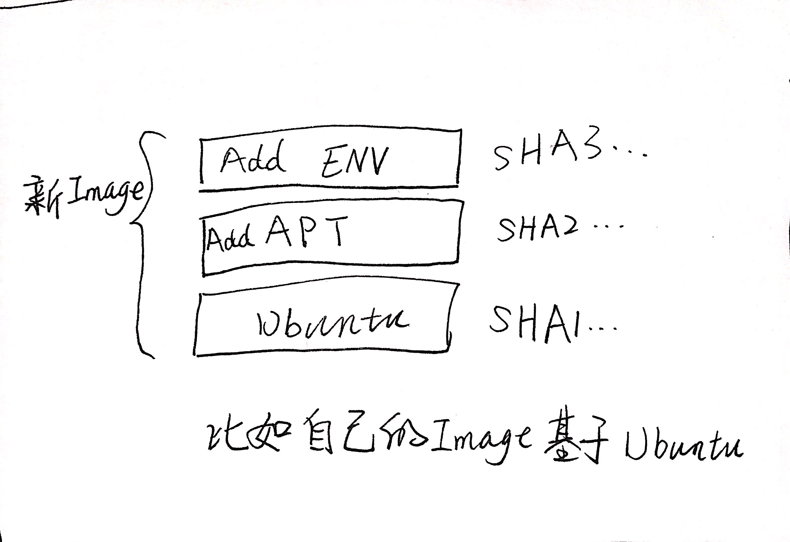
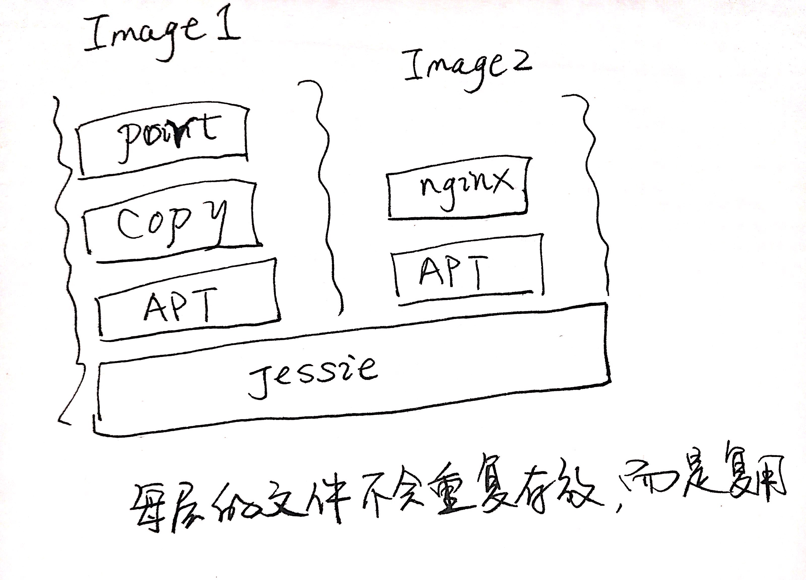
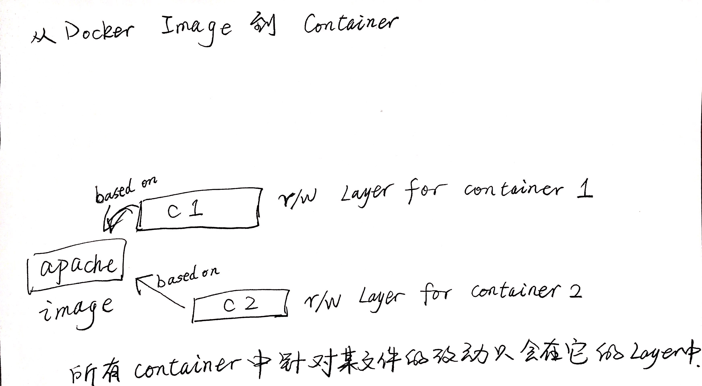

Docker Image
本节来看什么是 Docker Image, 它内部是什么, 怎么找 Image, 怎么构建 Image. 内容如下:
- 什么是 Image
- 使用 Docker Hub registry
- 管理本地的 Image 缓存
- 构造自己的 Image
什么是 Image
Image 具有如下内容和特性:
- App 的二进制文件以及 APP 的所有依赖
- Image 的元数据信息, 以及如何运行这个 Image 的相关指令
- 官方定义: Image 是一个 root 文件系统的改动序列, 以及在容器运行时里面的相关执行参数的有序集合.
- Image 并不是一个完整的 OS, 它不包含内核(kernel), 不包含内核模块(比如驱动), 内核是由 Host 提供的.
- Image 不会启动一个完整的操作系统, 启动它仅仅是启动一个应用程序
- Image 可以非常小, 比如 golang 的静态库或你的 APP 的二进制包.
- Image 也可以非常大, 比如 Ubuntu Image 就可以包含有 apt, apache, PHP 等等.
通过 Docker Hub, 可以找到许多三方或官方的 Image.
Image 的 Layer
Image 是基于 Union file system 的概念来构建的, 通过 docker history 命令就可以打印一个 Image 的 Layer 历史.
任何 Image 都是从一个空的 Layer 开始构建的, 这个 Layer 称为 scratch, 而之后的每一次对 Image 内部文件系统的改动, 就是一个新的 Layer.
比如自己创建一个 Image, 就像下面图中那样:

如果开发环境和生产环境只是最后的指令不同, 则 Image 的情况如下图所示:

基于同一个 Image 再往上添加内容, 如下所示:

从 Image 到 Container , 则实际上就是在 Image 上面添加了一层可读写 Layer:

Image 的识别
有三部分组成唯一识别一个 Image: <User>/<Repository>:<Tag>. 官方的 Image 只会是 nginx:Tag 这样的形式, 不需要 user 识别.
而这样的组合和唯一的一个 ImageID 对应, 所以实际上只要 ImageID 相同, Image 就是同一个.
通过 push 命令可以将改动的 Image 推送到自己的仓库中. 需要使用 docker login 先登录, 登录授权 key 会存放在对应的 .docker 目录下的config中.
Image 的构建: Dockerfile
这里有一个示例 Dockerfile. 通过 docker build -f 文件名 即可对这个镜像进行构建.
使用带丰富功能的基础镜像好处是可以简化后续流程, 不过也可以从零开始构建小镜像.
每个指令就是在镜像中添加一个 Layer, 所以指令的顺序非常重要.
# 基础镜像
# 任何 Dockerfile 都需要有一个 FROM
# 如果想从一个空镜像开始构建, 则可以使用 `FROM scratch`
FROM debian:jessie
# 环境变量, 可选
# 环境变量可以在后续指令中使用, 环境变量在 container 运行时会被设置为 envvar.
ENV NGINX_VERSION=1.11.10-1~jessie
# 下面这段是简化了的一个 RUN, 实际 nginx 构建的时候比这个复杂, 仅为说明 RUN 指令.
# RUN 即在构建时在 container 的 shell 中执行的命令
# 通过 && 连接命令的话可以不用把多个指令分配到多个 Layer, 这样可以节约空间和时间.
RUN apt-get update \
&& apt-get install nginx \
&& rm -rf /var/lib/apt/lists/*
# 将所有的日志转发到标准输出和标准错误中, 在 Docker 中只能用这样的方式来输出日志.
# 其中 stdout 和 stderr 就是 Docker 中的 "log collector".
# 转发后 Docker 就可以获取这些日志信息了
RUN ln -sf /dev/stdout /var/log/nginx/access.log \
&& ln -sf /dev/stderr /var/log/nginx/error.log
# 暴露端口
# 默认情况下, Docker container 中没有任何暴露的端口, 无论 tcp 还是 udp 协议.
# 可以通过 EXPOSE 指令将端口暴露到虚拟网络下.
# 暴露端口后, 就可以通过 -p/-P 参数在启动时将端口开放/转发到 host 了.
EXPOSE 80 443
# CMD一般都是最后一个指令, 且是必须的指令
# 它提供当 container 启动后所要执行的命令, 且只能有一个 CMD 指令存在
# 如果有多个 CMD, 则最后一个将会被执行.
CMD [ "nginx", "-g", "daemon off;" ]
通过 Docker build 构建 Image
有了 Dockerfile 来指导 Image 的构建, 下一步就是构建 Image 了.
在构建这个 Image 的时候, docker 会首先拉取基础镜像到本地缓存, 然后根据 Dockerfile 中的内容一行一行地执行, 并将这些 layer 缓存在本地:
docker image build -t 标签名 dockerfile文件
比如:
docker image build -t customnginx .